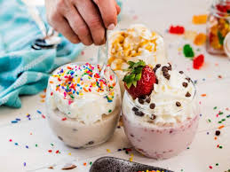

Ice cream is a mixture of milk, cream, sugar, and sometimes other ingredients, that has been frozen into a soft, creamy delight using special techniques. Ice cream has been a popular treat for hundreds of years but only become commonplace since the widespread use of refrigeration. The exploding popularity of ice cream has led to a number of ice cream variations including frozen custard, frozen yogurt, and even non-dairy versions made with ingredients like coconut milk.
1. There are so many flavors to choose from. Ice creams are famous because of their flavors. Kids and adults love the fact that there are a lot of flavors to choose from. You are able to choose the flavor you desire. Ice cream will be boring if it only has one flavor available for the whole wide world right? 2. It never fails to satisfy. Having a bad day at work or in school? Got dumped or got your heart broken? Eating ice cream helps lighten up one's mood. It helps you forget the tough day you have because you enjoy eating it with your favorite choice of flavors and toppings. It helps you get through the day.
